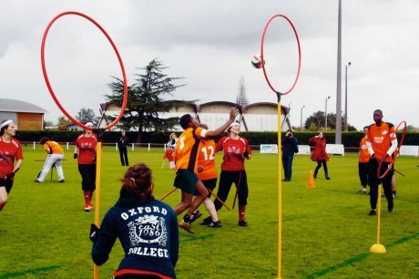

Hva er Quidditch?
Quidditch er det engelske navnet for sporten
som vi på norsk kaller rumpeldunk
Rumpeldunk er et ballspill oppdiktet av forfatter J.K. Rowling basert på den irske idretten hurling. Rumpeldunk spilles i fantasiverdenen i Harry Potter-bøkene og -filmene.
Men, rumpeldunk har blitt en populær lagsport på skoler og universiteter verden rundt!
Bli bedre kjent med sporten her!
Rumpeldunk er en allsidig sport hvor begge kjønn spiller på blandete lag. En
rumpeldunkkamp kan ofte virke kaotisk, da det er mye som foregår samtidig, men dersom
man får et overblikk over spillet er det utrolig morsomt både å se på og å spille.
Essensielt i rumpeldunk er at alle spillere i en kamp må til en hver tid ha en lime mellom
beina. Dersom man mister denne, har man "falt av limen" og må berøre sine egne målringer
før man får lov til å være med i spillet igjen.
I en rumpeldunkkamp er det 4 baller i spill (5 om man teller med snoppen), derav 1 sluff
(engelsk: quaffle) (en volleyball med litt lite luft) og 3 klabber (eng: bludgers) (dogdeballer
med litt lite luft). Banen er formet som en flatklemt oval, og hvert lag har tre målringer på
hver sin ende av banen. Disse målringene består av ringer som er festet litt over bakken på en
stang eller lignende.
Hvert lag består av 3 jagere (eng: chasers), 1 keeper, 2 knakkere (eng: beaters) og 1 speider
(eng: seeker). Jagerne prøver å score mål. Dette gjør de ved å hive, sparke eller føre sluffen
gjennom en av motstandernes målringer. Dette gir 10 poeng til laget til jageren som scoret, så
lenge jageren ikke har gjort noe ulovlig eller blitt skutt av en klabb før han slapp sluffen (se
under).
Knakkernes oppgave er å hive eller sparke klabbene på motspillerne. Om man får til dette, og
en klabb treffer en motspiller, blir motspilleren slått ut, og må berøre sine egne målringer før
han er med i spill igjen. Dersom man blir truffet av en klabb må man slippe ballen man holder
før man springer tilbake til sine egne ringer. Motstanderlagets knakker kan ta pol på et skudd,
noe som fører til at han ikke blir slått ut (ingenting skjer med den som hev ballen). Om man
treffer spillere på eget lag skjer det heller ingenting.
Generelt er det flere typer fysisk kontakt som er lovlige, men hardere fysisk kontakt (som
taklinger) må startes foran motspilleren. I tillegg er det kun lov å starte fysisk kontakt med en
spiller som spiller med samme ball. (Les: en knakker kan kun takle en knakker, og en jager
kan kun takle en jager eller en keeper.).
Hvert lag har en keeper som prøver å hindre at sluffen går gjennom målringene på hans
banehalvdel. Keeperen er i praksis en jager med litt ekstra egenskaper: Om keeperen blir skutt
av en klabb innenfor hans egen keepersone, skjer det ingenting. I tillegg kan man ikke takle
en keeper som er i sin egen keepersone. Disse egenskapene mister keeperen når han eller
sluffen forlater keepersonen, og keeperen får dem igjen når motstanderen får tak i sluffen.
Til slutt har vi speiderne. De prøver å fange gullsnoppen (eng: the snitch). Gullsnoppen er en
tennisball i en sokk, som er festet som en hale i buksen på en snoppsprinter (eng: snitch
runner). Speiderne har et begrenset utvalg av fysisk kontakt de kan utøve på snoppsprinteren,
men snoppsprinteren kan gjøre hva han vil mot speiderne (så lenge de ikke blir skadet). Når
en speider får tak i snoppen, scorer han 30 poeng til laget sitt, og kampen avsluttes. Det laget
med mest poeng vinner kampen. Ved uavgjort stilling går kampen videre til overtid og
eventuelt "sudden death".
Litt rumpeldunk historie
Selv om en rekke mennesker over hele verden har spilt det de har kalt rumpeldunk i lang tid, regner vi sportens begynnelse som 2005. Da spilte en gruppe studenter ved Middlebury College, Vermont, den første kampen noensinne av det som siden har blitt den internasjonale versjonen av rumpeldunk.
Siden den gang har sporten utviklet seg voldsomt, og det finnes i dag flere hundre lag spredd over 20 land. Det har blitt arrangert syv VM for klubblag, og gitt ut åtte utgaver av en stadig mer detaljert og profesjonell regelbok.
Sporten var imidlertid dominert av amerikanere lenge, og det tok lang tid før sporten tok seg opp i Europa. EM ble for første gang arrangert i 2012, men med svært få deltakende lag, og i hovedsak fra Frankrike. Nå er sporten imidlertid i sterk vekst, også i Norge. NTNUI startet som første lag høsten 2012, og NM ble for første gang arrangert våren 2013.
I dag finnes det lag i Oslo, Bergen, Trondheim og Ås, og det er flere lag i oppstartsfasen andre steder, som Stavanger og Fjaler.
Les mer om Rumpeldunk i Norge her
Les mer om opprinnelsen til Quidditch her

Dette trenger du for å spille rumpeldunk
En sopelime
Syv spillere
Tre forskjellige baller
Tre målringer
Hvor kan jeg spille rumpeldunk?
I dag finnes det lag i Oslo, Bergen, Trondheim og Ås, og det er flere lag i oppstartsfasen andre steder, som Stavanger og Fjaler. Vil du komme i kontakt med et lag eller starte ditt eget?
Ta kontakt med